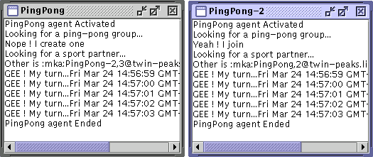

Figure 1. Two Ping-Pong agents

This demonstration shows simple message passing between two agents, as well as some basic group & role manipulation
Just launch two instances of this agent. The first agent checks if a ping-pong exists or not, and creates it. Then, it requests a player role in this group. It will then wait for another agent with the same player role in this group. The second one will check for the ping-pong group, joins it, and also requests the player role. When both agents find their partner, they will enter in a 5 messages exchange, then die.
This demo can also be launched in distributed mode, with the Communicator and GroupSynchronizer agents: just launch one ping-pong agent on each distant platform
You can also try it with the monitoring agents (GroupLister, AgentLister, MessageTracer, OrganizationTracer, ...)
The agent source is straightforward, so there isn't many things to say. Interesting points are the systematic usage of group, roles and AgentAddress concepts to structure the application logics and identify the agents.
There is also an other version called XMLPingPong which demonstrate the XMLMessage class (the rest is similar). In this demo, the agents exchange a short XML document and add comments at each turn.